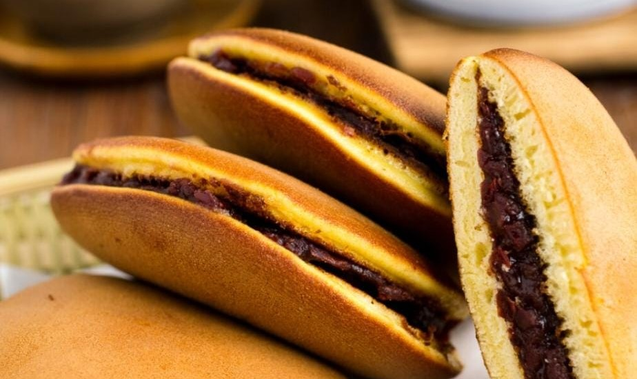
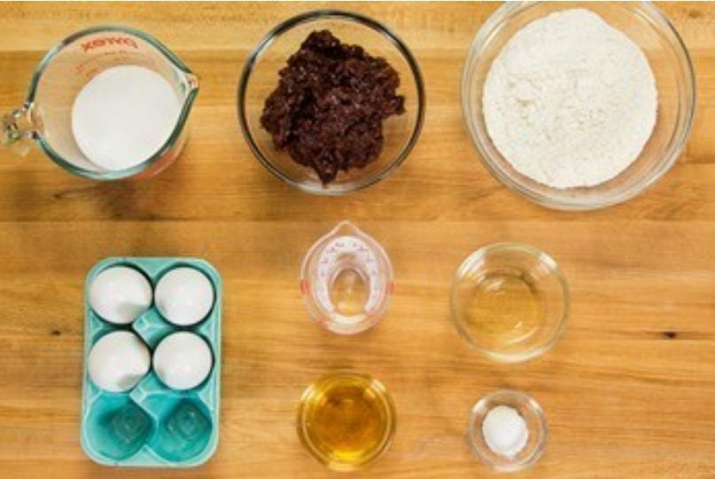

Dorayaki
Home
Dorayaki (どら焼き) is best described as a dessert with red bean filling between two slices of sweet fluffy pancakes. If you are familiar with Japanese cartoons from the '70s, you probably know this dessert from the anime character
Doraemon
who is crazy about this snack and falls for any trap involving them.

Ingredients
4 large eggs
⅔ cup sugar
2 Tbsp honey
1⅓ cup all-purpose flour
1 tsp baking powder
1-2 Tbsp water
neutral-flavored oil
1.1 lb sweet red bean paste (anko)

Nutrition Facts
Calories 267
Total Fat 6.27g(8%)
Cholesterol 38mg(13%)
Sodium 998mg(43%)
Total Carbohydrate 35.13g(13%)
Vitamin C 32.3mg(36%)
Vitamin A 35mcg(4%)
Procedure
Gather all the ingredients.
In a large bowl, combine the eggs, sugar, and honey. Whisk well until the mixture becomes fluffy.
Sift the flour and baking powder into the bowl with the egg mixture and mix until combined. Put the bowl in the refrigerator to rest the batter for 15 minutes.
After resting, the batter should be relaxed and slightly smoother. Now, stir in half of the water and check the consistency. Add more of the measured water until you reach a pancake batter consistency. The consistency should be similar to pancake batter. Depending on the size of the eggs and how accurate your flour measurement is, the water amount may vary.
Heat a large nonstick frying pan over low. It's best to take your time and heat the pan slowly; I keep the heat on the lowest setting for 5 minutes. When the pan is thoroughly heated (no hot spots), increase the heat to medium low. Dip a paper towel in the vegetable oil and coat the bottom of the pan with the oil. Then, use another paper towel to remove the oil completely (that's the key to evenly golden brown Dorayaki pancakes). With a ladle or a small measuring cup (I use a 4 Tbsp measuring cup), pour 3 Tbsp of the batter from 3 inches (8 cm) above the pan to create a pancake that's 3 inches (8 cm) in diameter. Cook one pancake at a time.
Assemble the Dorayaki by making a sandwich using two pancakes and the sweet red bean paste as filling. Put more red bean paste in the center so the shape of the Dorayaki will be curved (the middle part should be thicker than the edges). Wrap the Dorayaki with plastic wrap until ready to serve.
The leftovers can be wrapped in plastic and stored in a cool place for 2 days. They also can be put in a freezer bag and stored in the freezer for a month.
Expert Guide
Back ←
Scroll to Top ↑